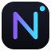
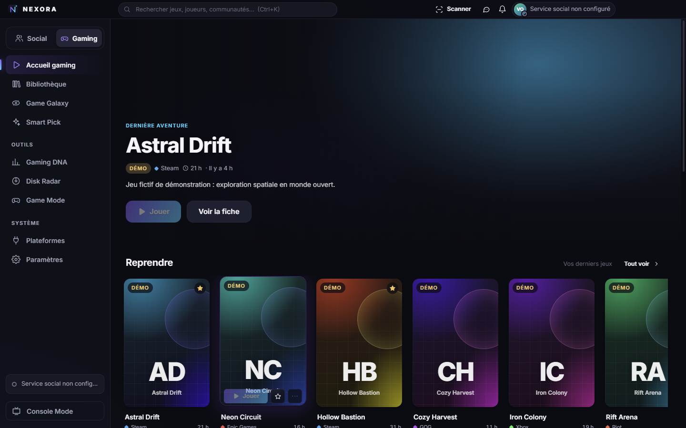
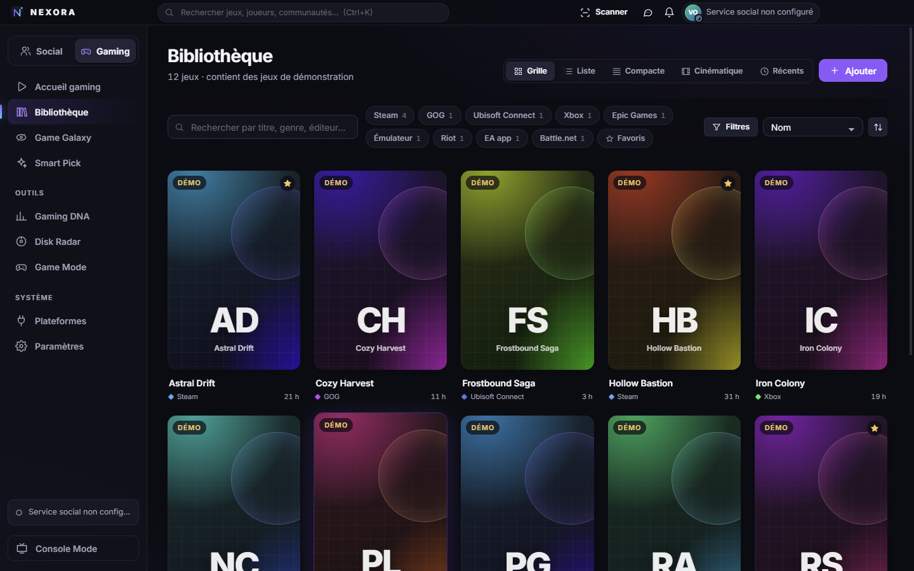
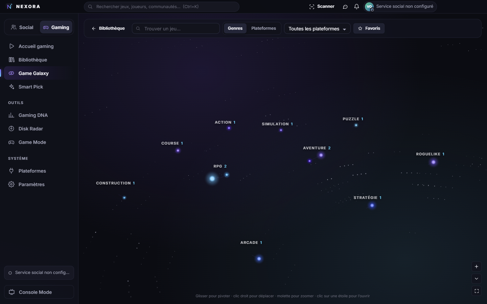
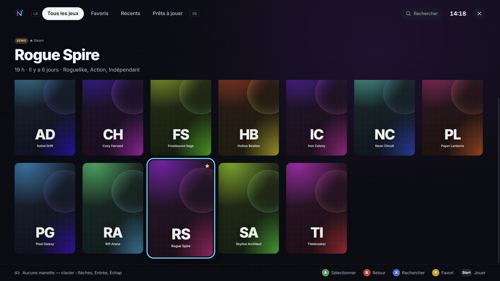
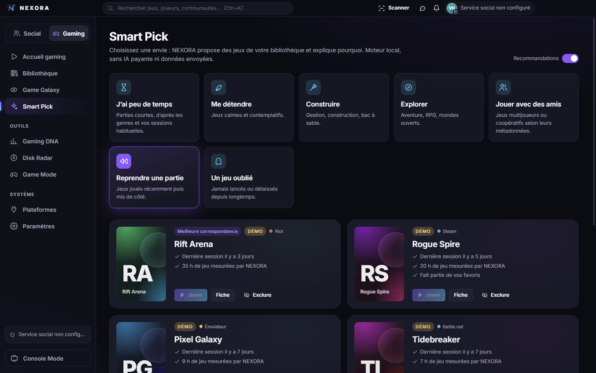

Une seule bibliothèque
Détection automatique de vos launchers et de vos jeux installés, lancement en un clic, temps de jeu, favoris, collections et recherche instantanée.

NEXORA TéléchargerGratuit · Windows 10 et 11
NEXORA rassemble les jeux de Steam, Epic, Xbox, GOG, Ubisoft, EA, Battle.net, Riot et vos émulateurs dans une seule bibliothèque, avec vos amis, vos messages, vos communautés et des salons vocaux.
Recherche de la dernière version…

Détection automatique de vos launchers et de vos jeux installés, lancement en un clic, temps de jeu, favoris, collections et recherche instantanée.
Amis, présence, ce à quoi chacun joue (si vous le choisissez), messages privés et de groupe en temps réel.
Appels privés et salons de communauté jusqu’à 8 personnes, audio chiffré, réduction de bruit, sonnerie et option pour masquer votre adresse IP.
Créez votre club, publiez, organisez des soirées de jeu et des tournois, avec des rôles et des outils de modération.
Trouvez des coéquipiers par jeu, langue, plateforme et style de jeu, puis lancez le jeu directement depuis NEXORA.
Game Galaxy, Smart Pick, statistiques de jeu, Disk Radar, mode console à la manette, thèmes personnalisables et mode Ne pas déranger.
Captures de l’application avec la bibliothèque de démonstration.




Configuration : Windows 10 ou 11, 64 bits. Environ 100 Mo. Un micro pour les salons vocaux.
Oui.
Non. Votre bibliothèque, vos statistiques et vos fichiers restent sur votre PC. Le titre du jeu en cours n’est partagé avec vos amis que si vous l’activez. Aucun nom de processus n’est jamais envoyé.
Pas pour la partie gaming. Un compte (e-mail et mot de passe) est nécessaire pour les amis, messages, communautés et salons vocaux.
Les appels sont chiffrés de bout en bout entre participants et ne sont jamais enregistrés. Les messages sont protégés par des permissions vérifiées par le serveur et chiffrés pendant le transport, mais ils ne sont pas chiffrés de bout en bout.
Un certificat de signature de code est payant chaque année ; NEXORA n’en a pas encore. L’installateur est publié uniquement sur ce site, et chaque mise à jour est vérifiée par son empreinte de contrôle avant installation.
Paramètres Windows › Applications › NEXORA › Désinstaller. Vos jeux ne sont jamais modifiés. Pour effacer aussi votre compte, utilisez d’abord « Supprimer le compte » dans Mon profil.